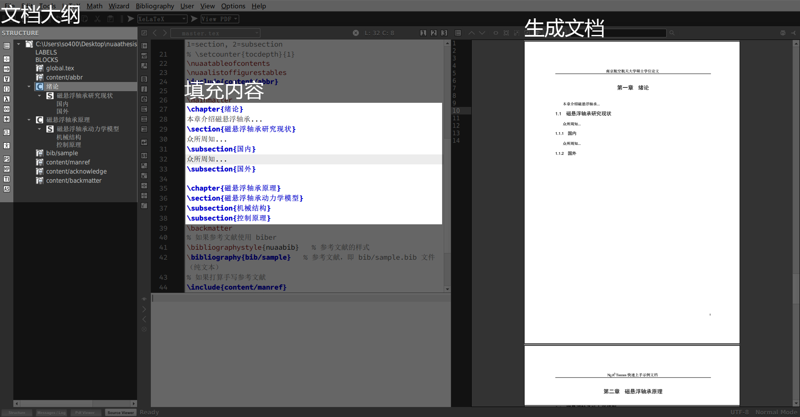
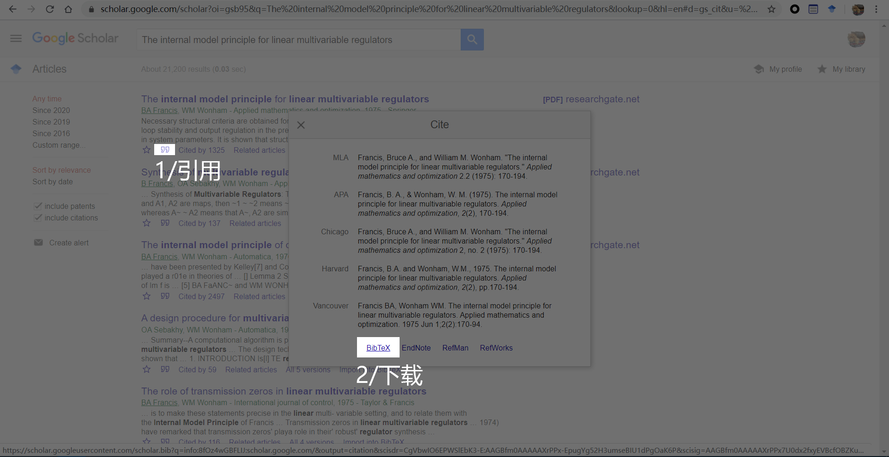
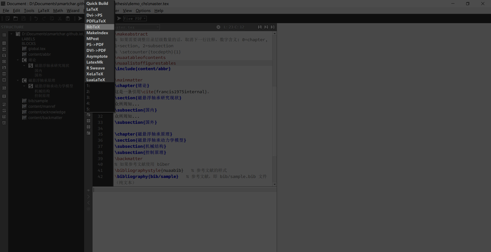
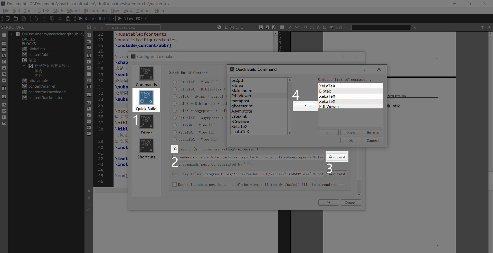
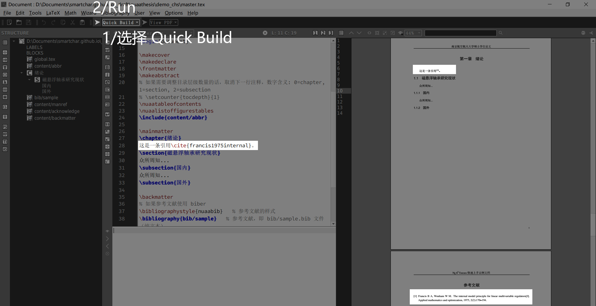

1主文件 master.tex 结构
格式定义
1
2
3
4
5
6
7\documentclass[
lang=cn,
degree=master,
% zhuanshuo,
openany,oneside
% openright,blankleft,twoside
]{nuaathesis}这一部分定义了文档的全局格式，lang=cn指使用中文，degree=master指使用研究生论文模板，%是LaTeX语言的注释符号，% zhuanshuo 指使用学硕模板（如果要使用专硕模板就将%去掉），写论文时使用openany,oneside，需要提交图书馆打印时，将openany,oneside注释掉，将openright,blankleft,twoside取消注释，从而打印摘要、承诺书右侧空白的界面。
文档标记
1
2
3\begin{document}
...
\end{document}这是文档的开始和结束标记。
封面、承诺书等标准化界面
1
2
3
4
5
6
7
8\makecover
\makedeclare
\frontmatter
\makeabstract
% 如果需要调整目录层级数量的话，取消下一行注释，数字含义: 0=chapter, 1=section, 2=subsection
% \setcounter{tocdepth}{1}
\nuaatableofcontents
\nuaalistoffigurestables根据英文名称就可以看出来这几行代码分别是输出封面、承诺书、摘要、目录和图表列。
内容填充
1
2
3
4
5
6
7
8
9
10
11
12
13
14
15
16
17
18
19
20
21
22\include{content/abbr}
\mainmatter
\include{content/start}
\include{content/highlight}
\include{content/theorem2}
\include{content/demo}
\appendix
% 如果需要附录的话，在这里 include
\include{content/ex_postscript}
\backmatter
% 如果参考文献使用 biber
\bibliographystyle{nuaabib} % 参考文献的样式
\bibliography{bib/sample} % 参考文献，即 bib/sample.bib 文件（纯文本）
% 如果打算手写参考文献
\include{content/manref}
\include{content/acknowledge}
\include{content/backmatter}include是用来插入存放在其他文件中的内容，类似C语言的include用法。这个模板把内容分开放在了不同的.tex源文件中，然后通过include聚合在一起。
2 填充内容
第一章到第六章
NUA2 Thesis 模板的思想是将不同章节放在不同的.tex文件中保存，然后通过include命令将所有章节的.tex文件聚合在一起。我不打算用这种结构，原因是：Texmaker编辑器可以识别一个.tex文件内的结构，并以大纲的形式显示在左侧。如果使用多个文件存放不同章节的内容，那么就不能显示大纲了，只会显示文件列表。
我们先来删掉master.tex中的以下代码：1
2
3
4
5
6
7
8\include{content/start}
\include{content/highlight}
\include{content/theorem2}
\include{content/demo}
\appendix
% 如果需要附录的话，在这里 include
\include{content/ex_postscript}
然后在\mainmatter和\backmatter两行之间像这样填充论文第一章至最后一章的内容：1
2
3
4
5
6
7
8
9
10
11
12
13
14
15
16
17
18
19\mainmatter
\chapter{绪论}
本章介绍磁悬浮轴承...
\section{磁悬浮轴承研究现状}
众所周知...
\subsection{国内}
众所周知...
\subsection{国外}
\chapter{磁悬浮轴承原理}
\section{磁悬浮轴承动力学模型}
\subsection{机械结构}
\subsection{控制原理}
\backmatter
按Ctrl+s保存之后，点击Run等待编译完，然后点View，就可以看到生成的文档啦：

除了第一章至最后一张的内容需要填充，我们还需要修改封面、摘要、致谢等信息。
封面（中文和英文）
在global.tex文件中修改
承诺书
无需修改，自动生成
摘要（中文和英文）
在global.tex文件中修改
目录
无需修改，自动生成
图标清单
无需修改，自动生成
注释表
在content\abbr.tex中修改
致谢
在content\acknowledge.tex中修改
在学期间的研究成果及学术论文情况
在content\backmatter.tex中修改
填充参考文献
我们先将所有需要用到的参考文献以条目的形式储存在bib\sample.bib中，然后在需要正文需要引用的地方「艾特」某条参考文献即可，使用流程如下：
我需要用到的参考文献的是《The internal model principle for linear multivariable regulators》，在谷歌学术或者百度学术中搜索这篇文章，下载得到这种格式的条目：

1 | @article{francis1975internal, |
把这一条放置在bib\sample.bib的任意位置就相当于把这条参考文献添加到了你自己的引用库中了，下面就可以在正文的任意位置引用它了。像这样引用：
1 | 这是一条引用\cite{francis1975internal}。 |
添加完引用后，我们编译过程需要额外进行一次BibTex编译master.tex，才能让参考文献正确地显示在正文中。完整的编译流程是：
1 | XeLaTeX > BibTeX > XeLaTeX > XeLaTeX > View pdf |
BibTex听起来有点陌生，你不用关心这是什么，只用知道BibTex和XeLaTex在同一个列表中，选择之后点击左侧的三角形Run图标即开始编译了。

可能你也看出来了，一共需要点击5次Run才能看到最终的pdf文档，这不符合这个模板「解放劳动力」的宗旨，好在Texmaker编辑器给我们提供了Quick Build功能。点击上方菜单栏的Option>Configure Texmaker，弹出配置界面后按照下图序号所示的步骤进行配置，点OK完成配置。现在，我们就可以Run这个Quick Build，稍等一会儿就可以看到新生成的文档了：


至此，你已经掌握了这个模板的90%的内容，余下一点简单的公式、图标和单位的处理。